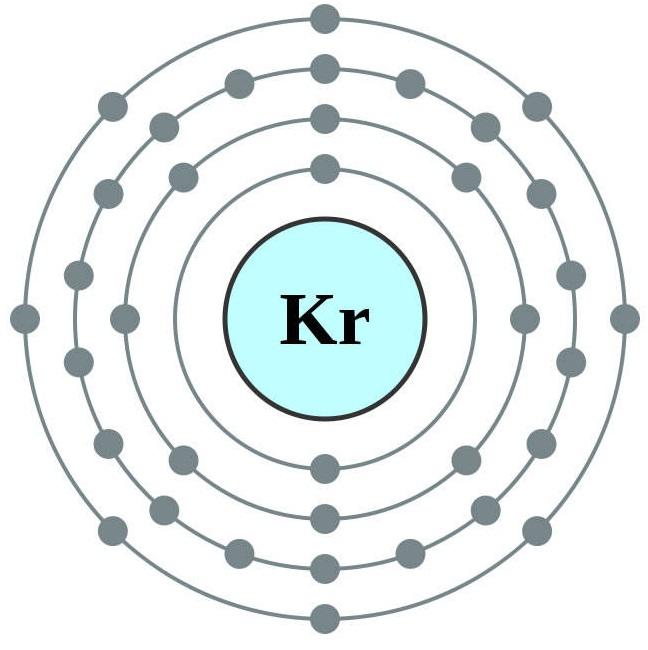

KRIPTON:

El kriptón es un gas noble inodoro e insípido de poca reactividad caracterizado por un espectro de líneas verde y rojo-naranja muy brillantes. Es uno de los productos de la fisión nuclear del uranio. El kriptón sólido es blanco, de estructura cristalina cúbica centrada en las caras al igual que el resto de gases nobles.
Para propósitos prácticos puede considerarse un gas inerte aunque se conocen compuestos formados con el flúor; además puede formar clatratos con el agua al quedar sus átomos atrapados en la red de moléculas de agua. También se han sintetizado clatratos con hidroquinona y fenol. Es el primero de los gases nobles en orden del período para el que se ha definido un valor de electronegatividad.
 Ir a página principal
Ir a página principal